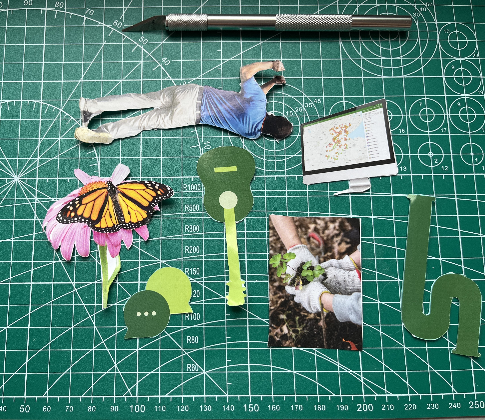
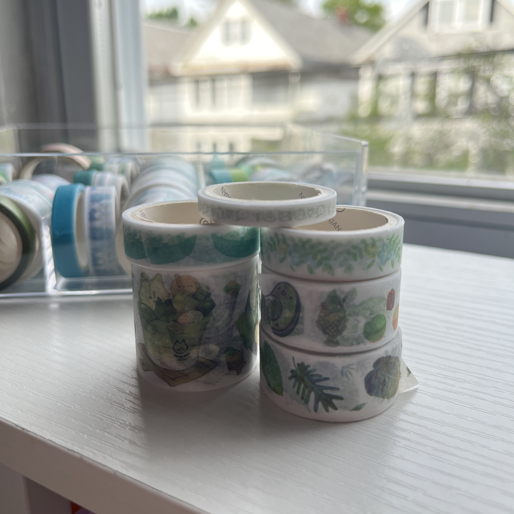
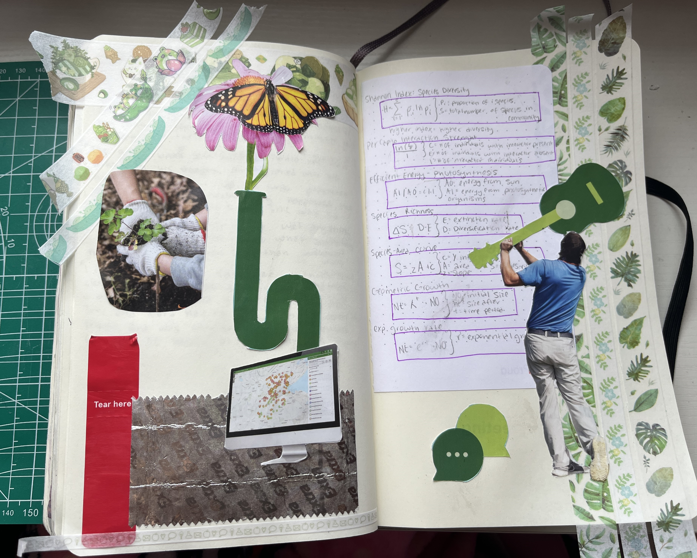
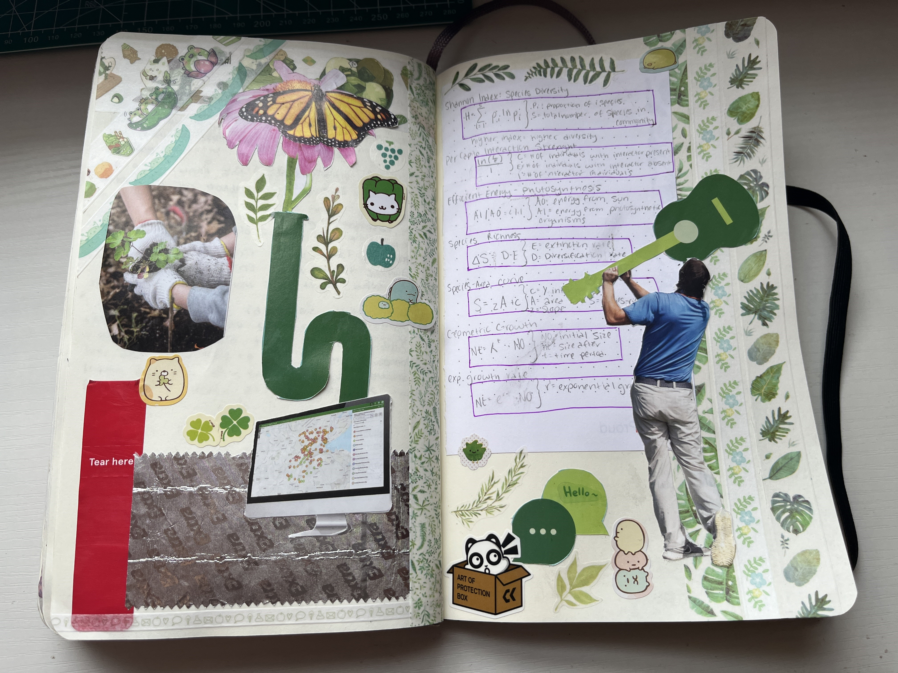

Amara's steps to junk journaling
Step 1: Have a journal

Todays journaling walk through takes place within Moleskin, specifically the Classic Notebook: Hard Cover, Black. With my large journal measuring 5x8.25 inches, this notebook is my default journal form. I prefer its plain pages as I feel lined and dotted pages clash too much with the content I create. I like the Moleskin brand for their durability and reliability, but their collaboration journals are very fun too. In the past I was gifted this Limited Edition Sakura Notebook with similar dimensions and page type, but with a beautiful silk hardcover design.
Step 2: Collect scraps
Thought the week, or whenever I encounter scrap pieces of paper products, I collect them and save them to be used in a potential journaling page. Today I am using a red sticker label, a gum wrapper, left over notes from studying, and a free magazine I found in my mailbox. Junk journaling is versatile, if an object can be glued on a page it can be part of your journal!
Step 3: Cut outs
When I collect large pieces of paper like magazines, newspapers, or flyers, I enjoy sifting through the pages and finding icons, images, and other visuals to cut out. I find that using an exacto knife makes cutting out delicate and complex images a lot easier but depending on the size and composition of the content, scissors can work just as well. When it comes to choosing the content, whatever catches my eye I will usually cut out. Sometimes I may cut something but not end up using it for whatever reason and that’s okay too! The more material you have to work with the better.
Step 4: Pre-glue arranging
Before I permanently glue my images, I take a bit of time imagining how they can be arranged on the page. Some elements I decide work well in proximity, others I choose to have floating around the page to take up space. The composition of your scraps is unique to how you envision the page! There are lots of ways elements can be placed, as long as the arrangement looks cool to you then you are ready to glue!
Step 5: Choosing extra elements and color scheme
Having a washi tape collection has really elevated my styling and color pops in my journal pages! I love using washi tapes for backgrounds and to establish a consistent color theme. Today I will be using mostly green, but sometimes I choose multiple colors or just go by pattern. Other background elements I use are origami paper or other solid color paper scraps. Adding color and having as little blank space as possible is my goal for every page. I feel this makes the journal more vibrant and full.
Step 6: First layer
Setting aside the larger elements not yet glued, the first layer I add to the page is the color elements. Keeping in mind the potential placement of the other items, I arrange the chosen washi tapes in the blank space to complement the rest of the layout.
Step 7: Second layer
The second layer is where I finally glue in my big cutouts. Using a regular glue stick I start with the bigger elements to place. In the example I do some layering of separate cutouts, when this happens remember to apply the glue according to whichever element you will place first. I can get a bit frustrating when you apply glue only for it to dry out before it reaches the page! I make some minor adjustments to the placing and the sizing of the elements but other than that I do my best to align them to my liking and making sure they stick adequately.
Step 8: Stickers!
After trimming the washi tapes and making sure my cut outs are glued in well, it’s time to decorate with tickers! Thankfully I collect sticker sheets whenever and wherever I can, so I have a large variety to choose from. Today I decided to stick to green themed stickers. Adding in small elements adds some character and depth to my pages, so I enjoy using stickers of all sizes and patterns. I am a big fan of stickers with cute mascots, but today I also included some nature themed stickers to add to the green theme.
More inspiration
These are some of my favorite pages included in my current journal. Here you can see the many pieces of “junk” I have collected over time. From wrappers to plane tickets and food labels, I really do try to glue anything into my journal! I also occasionally doodle when I have lots of empty space. I hope these pages can inspire you to try collecting a few scarps to creatively glue!